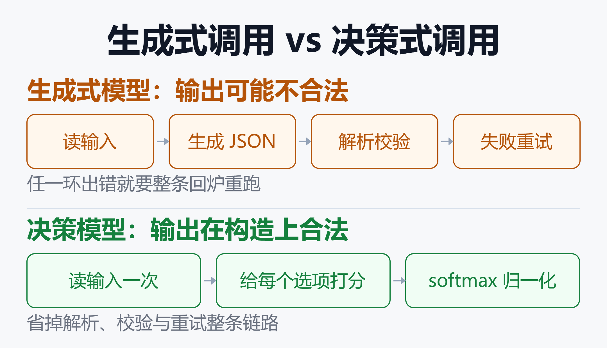
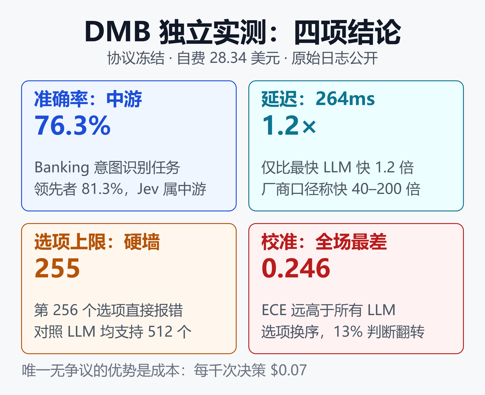
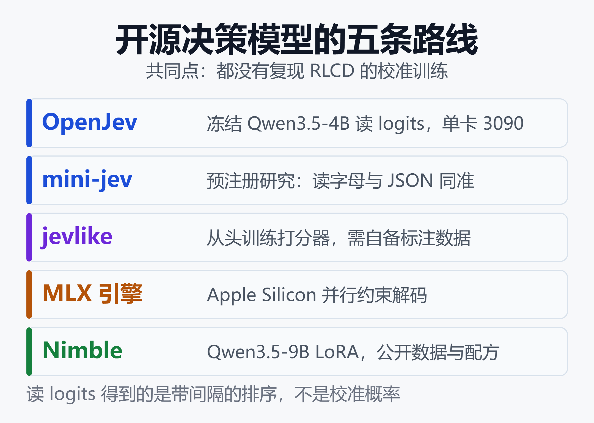

决策模型选型：Jev 闭源收费，Laya 开源免费，谁的概率能信？
2026 年 9 月 15 日，TypeSafe AI 把一个不会写字的模型推上台：Jev。输入是一段状态加一组带类型的问题，输出是带概率的判断，没有一个字的自然语言。定价 $0.042 每百万输入 token，输出免费。同天宣布 DCVC 领投的 4000 万美元种子轮，估值 2 亿美元。
五天后，Convai Innovations 放出 Laya——同样的输入输出形状，Apache 2.0 开源权重，单问延迟 32.8 毫秒，是 Jev 第三方实测 264 毫秒的八分之一。
两边都在说同一句话：Agent 里绝大多数调用不需要一个会写诗的模型，只需要一个会判断的模型。分歧在于这件事该闭源收费还是开源免费，以及——更要紧的——它们给出的那个概率，到底值不值得你在代码里 if 一下。
一、"只给判断不写文字"到底是什么
先把这个品类讲清楚，因为它的名字比它的技术更新。
TypeSafe 把 Jev 叫做 System One Model，取自卡尼曼《思考，快与慢》里的系统一：快速、直觉、不做推理展开。对应地，会写长思维链的 GPT、Claude 是系统二。
具体的接口长这样：你给一个 state（字符串、JSON 或文本数组），再给一组 questions，每个 question 声明自己的答案空间。模型一次并行前向把所有问题都答完，返回类型化的值加概率分布。
整个产品最反直觉的地方在于，表达能力被故意限制成三种形状。形状固定，返回值才永远可解析；选择有限，概率才校准得出来。
下面三个例子用同一张工单做输入：客户三天前接 Stripe 一直报 401，丢了约 40 单，21 号还有一场推广活动。
Choice：从已知选项里挑一个
适用于"答案是一个已知选项"的问题，典型场景是工单路由、技能选择、意图分类。
"department": Choice(
instructions="这张工单该由哪个团队处理",
criteria={
"billing": "付款或订阅问题",
"technical": "Bug 或集成故障",
"sales": "定价或账户咨询",
},
)
返回的不是一个标签，而是一整个概率分布，外加一个置信度：
"department": {
"choice": "technical",
"probabilities": {
"technical": 0.87, "billing": 0.09,
"sales": 0.04
},
"confidence": 0.81
}
要注意选项之间是竞争关系，概率加起来等于 1。所以"多个标签可能同时成立"的场景不能用一个 Choice 表达——那会让它们互相抢概率，此消彼长。这种情况要拆成多个 Noul。
Score：沿有序维度给一个位置
适用于"答案是一条程度"的问题，比如不满程度、紧急度、复杂度、质量分级。criteria 是一个有序的描述数组，模型返回这条轴上的位置。
"frustration": Score(
instructions="客户表现出多大的不满",
criteria=["平静，只是陈述事实", "不满但克制",
"非常愤怒，措辞激烈"],
)
三档 criteria 对应 0–2 的轴，返回值是连续的，不是整数档位：
"frustration": { "score": 1.62, "confidence": 0.74 }
1.62 落在"不满但克制"和"非常愤怒"之间偏后，比一个整数档位携带的信息多。下游代码可以直接拿它做排序或阈值。
Noul：判断一个条件是否成立
适用于"答案是是或否"的问题。这是三个原语里最简单的一个，也是最容易被误用的一个。
"is_urgent": Noul(instructions="这条消息传达了紧迫性")
返回值只有一个概率，没有单独的置信度字段：
"is_urgent": { "noul": 0.994 }
原因是概率本身已经包含了不确定性信息。这里有个高频误解：Noul 接近 0.5 表示"是"和"否"的概率相当，也就是模型说不好，不是"中等强度"。强度要用 Score 表达。
三者的选择标准其实一句话就够：看答案意味着什么。挑一个已知选项用 Choice，要一条程度用 Score，判断一个条件用 Noul。
上面三个问题会放进同一次请求，并行执行、互相看不到对方的答案——所以每个问题的 instructions 必须自带完整语义。问题名不进模型，只有 instructions 和 criteria 会被模型看到。
这个"合并"动作是成本优化的主力。官方一个 13 问的合规案例里，合并成一次请求相比拆成 13 次，带来 12.2 倍成本差和 10 倍时间差，因为那份文本只需要发一遍。
关键在于答案空间是请求时声明的。这一点把它和传统的 BERT 分类器分开了——分类器的标签集在训练时就焊死了，换一套标签就要重训；决策模型的标签集写在请求体里，改一行 JSON 就换了任务。
也正因为答案空间受限，格式幻觉从根上消失了。模型无法返回一个不在你列表里的值，不会吐出半截 JSON，不需要重试解析。这是它在工程上最实在的那部分价值。

如上图，生成式模型要走「读输入 → 逐 token 生成 JSON → 解析 → 校验 → 失败重试」这条链，任何一环出错都要回炉；决策模型只走「读输入 → 给每个选项打分 → softmax」，输出在构造上就是合法的。省掉的不只是时间，还有那一整套解析与重试的工程代码。
二、Jev：4000 万美元押注一个不会说话的模型
TypeSafe AI 2024 年由 Diogo Almeida、Erik Gafni 和 Sasha Sheng 创立。Almeida 在 OpenAI 待了约四年，参与过 RLHF、InstructGPT、ChatGPT 和 GPT-4，2024 年离开。
他给 Forbes 的说法是，行业一直在为取悦人类做优化，而且已经超人了——言下之意是，为软件做优化这件事被漏掉了。给 TechCrunch 的说法更直接：对话模型是"瓶中闪电"，很惊艳但没那么有用。
模型名取自 19 世纪经济学家 William Stanley Jevons。杰文斯悖论说的是成本下降会放大而不是缩减总消耗量——Almeida 表示这个命名反映了他的预期：机器智能便宜下来，部署会铺得更广。
官方公布的数字很好看：
| 指标 | 官方口径 |
|---|---|
| 端到端延迟 | 70–500 毫秒 |
| 输入价格 | $0.042 / 百万 token |
| 输出价格 | 不计费 |
| 单次上下文 | 64k，state 占 32k |
| 吞吐上限 | 250k token / 秒 |
| 请求速率 | 1200 请求 / 分钟 |
| 对比前沿模型 | 快 40–200 倍 |
| 成本优势 | 省 40–400 倍 |
峰值宣称是快 193.6 倍、省 444.6 倍。但要注意 TypeSafe 自己在技术说明里写了三件事：这些工作流由其模型能力团队自行构建、承认可能存在偏差、并表示报告的收益很可能落在真实世界结果的高位区间。
技术细节几乎没公开。没有论文、没有权重、没有架构说明。官方只说是基于 transformer、完全用合成数据训练、方法叫 RLCD（Reinforcement Learning for Calibrated Decisions）——概率对着结果优化，而不是对着人类偏好优化。外部观察者怀疑底座是某个开源权重模型。
对于要做选型的人，这里有一条硬约束值得记住：Jev 是闭源 API、美国托管、早期访问需要排队。任何数据合规敏感的场景，这一条先把它筛掉了。
三、Laya：Apache 2.0 的 33 毫秒对位
Laya 走了一条不一样的路。它不是自回归模型改造，而是直接用双向编码器。
模型族有三个 checkpoint，全在同一个 Hugging Face 仓库：
| 版本 | 参数 / 用途 |
|---|---|
| laya | 421M，英文、护栏 |
| laya-multilingual | 322M，100+ 语言 |
| laya-typed-decisions | 421M，四类工作流微调 |
英文版底座是 ModernBERT-large（395M，全量微调），加一个从头训练的决策头：2 层 transformer、一个选项标记打分器、一个 act/escalate 头。多语言版换成 mmBERT-base，22 层、256k 词表，上下文 1024（编码器最高支持 8k）。
核心机制叫选项标记（option markers）：每个选项在自己的 [MASK] 位上被打分，然后在该问题的选项内做 softmax。答案空间在请求时定义，所以新的 schema 不需要重训——这和 Jev 的接口语义是对齐的。
训练方法作者也叫 RLCD：策略输出一个分布，探索时给 logits 加零均值高斯噪声，奖励用严格正当评分规则（log + spherical，有序问题再加 ranked probability score）。数学上，只有报告诚实概率才能最大化期望奖励。更新用 REINFORCE 加组均值基线，GRPO 风格。
实际调用只有几行：
import laya
from laya import Router
router = Router(preload=True)
state = {
"subject": "发票 #4411 重复扣款",
"body": "三月被扣了两次，今天不退就取消订阅。",
}
questions = {
"dept": {
"type": "choice",
"instructions": "该由哪个部门处理？",
"criteria": {
"billing": "发票、付款、退款",
"technical": "故障、宕机",
"sales": "定价、新合同",
},
},
"churn_risk": {
"type": "noul",
"instructions": "用户是否威胁要取消订阅？",
},
}
res = router.predict(state, questions)
print(res["answers"]["dept"]["choice"])
print(res["answers"]["churn_risk"]["noul"])
这里的 Router 是个值得单独说的设计。英文 checkpoint 在非拉丁文字上会崩——高棉语（又称柬埔寨语）准确率 0.000，而置信度 0.952。模型错得很自信，所以靠置信度门限救不回来。
Router 的做法是在前向之前，用不到 0.5 毫秒的纯 Python 检测文字系统，再分派到合适的 checkpoint。路由结果带完整元数据，会告诉你为什么这么选。
一个容易踩的坑：默认 max_loaded=1，语言交替的流量会在每次请求时重建模型，实测 CPU 中位数 7.4 秒、T4 上 10.3 秒。生产环境必须 Router(preload=True)。
四、正面对比：两边各赢了什么
Laya 的模型卡里有一张和 Jev 的对比表。需要先说清口径：Laya 的数字是自测，Jev 的数字是第三方已发表结果，作者明确写了"从未在此处测量（无 TypeSafe API 访问权限）"，样本量和提示词都不同。
这个口径声明本身就值得表扬，但也意味着这张表不能当同台竞技看。
| 指标 | Jev / Laya |
|---|---|
| typed-decisions | 0.727 / 0.766 |
| AG News（4 标签） | 0.910 / 0.950 |
| 情感（6 标签） | 0.480 / 0.595 |
| Banking77 | 0.870 / 0.425 |
| ECE（越低越好） | 0.246 / 0.081 |
| 单问 p50 延迟 | 264ms / 32.8ms |
Laya 在小标签空间和延迟上明显领先，Banking77 上则被打穿。原因很技术但很实在：选项共享一个固定的 head_max_len 预算（英文 192 token、多语言 256 token），77 个选项分下来每个只剩 3 到 4 个 token，标签文本已经彼此无法区分了。
这个坑有解：把 head_max_len 提到 512、max_len 提到 1024 以上；或者把大选项集拆成两级粗到细的层级选择。但默认配置下，50 个以上选项的场景 Jev 更省事。
更值得注意的是 Laya 自己列出的三处落后：
- 高基数标签空间（>20 选项）：Jev 开箱支持 255 个选项
- 软分布匹配：对教师模型的完整概率分布，Jev 0.580 对 Laya 0.471
- 温度缩放前的原始校准：基座 ECE 0.213，Jev 0.144
还有一段更狠的自我揭短。Laya 基座 checkpoint 在 typed-decisions 上零样本只有 0.362，多语言版 0.352，而随机基线是 0.318、多数类基线是 0.461——基座连"每次都猜最常见的那个标签"都打不过。那个 0.766 属于在该基准自己的训练集上微调过的 checkpoint。
作者的原话是：Laya 是一个可以快速特化的底座，不是一个零样本决策引擎。这句话应该被每个打算直接拿它上线的人抄在便签上。
五、第三方独立实测给出的另一个版本
厂商自测和开源自测都有立场。真正有参考价值的是 nibzard 做的 DMB（decision-model benchmark）：协议提前冻结、自费 28.34 美元、原始日志全部公开、无厂商赞助。
它把三类选手放进同一个协议：Jev、五家供应商的八个约束解码 LLM、三个确定性基线。结论和营销材料出入不小。

如上图，四项结论各自指向不同的方向：
准确率不是优势。 Banking 意图识别上 Jev 76.3%，属于中游；领先的是 Cerebras 上的 gpt-oss-120b（81.3%）和 glm-5.3（80.4%）。垃圾短信任务上 GLM 系列领先（94.9%、91.4%），两个 OpenAI 模型反而低于 87.7% 的多数类基线。
快是真的，但不是 40–200 倍。 Jev p50 为 264–276 毫秒，且从 2 个选项到 255 个选项几乎不变——这个"选项数不影响延迟"的特性是真优势。但它只比 Cerebras 上的 gpt-oss-120b 快 1.2 倍，比思考模式的模型快 10–16 倍。厂商的倍数只在对手停留在最慢默认模式时成立。
255 选项上限是硬墙。 254 和 255 个选项时 Jev 以 100% 准确率作答；256、384、512 个选项时直接返回 400 Too many choices。每个参与测试的 LLM 都能处理 512 个选项。
只有 Jev 会硬猜。 在强制不确定的题目上，所有 LLM 有 97.3%–100% 的比例承认不知道，Jev 只有 49.7%。它的校准误差 ECE 0.246 是全场最差，而 LLM 落在 0.039–0.122。
还有一项厂商评测从不测的维度：位置偏差。把同一批题目的选项顺序打乱重跑，Jev 改变了 13% 的答案，最差的 LLM 是 37%。也就是说，你把选项换个顺序，十三分之一的判断会翻。
唯一没有争议的是成本。Banking 任务上 Jev 每千次决策 $0.07，最便宜的 LLM 是 $0.19，差十倍量级。
把这些放在一起，Jev 的真实卖点不是准确率，也不是宣传里的倍数，而是：在可接受的准确率上，把每次决策的成本和延迟同时压到一个数量级以下，且不随选项数膨胀。这已经足够重塑很多 Agent 的成本结构，不需要靠 445 倍来撑。
六、开源生态：五条不同的路线，和一个诚实的结论
Jev 发布后一周内，社区冒出几十个"开源复现"。multimodalart 建了个追踪器专门分类了 38 个产物，就为了分辨信号和噪音。
Apidog 的横评把这些项目归成三类捷径，值得照抄这个分类框架：
- 读冻结聊天模型的 logits：OpenJev、mini-jev
- 从头训练一个小打分器：jevlike
- 换掉解码引擎做并行约束解码：MLX 引擎、vLLM PR

如上图，五个代表项目的路线、底座和硬件门槛差别很大：
- OpenJev（MIT）：冻结 Qwen3.5-4B 读选项 logits，单张 3090 可跑。作者自测：直接读类型化 logits 用 1.023 秒答完 21 组概率对，自回归写 JSON 要 5.332 秒，快 5.21 倍；在 102 行 TypeSafe 子集上模态一致率 0.845，对 Jev 已发表的 0.883。只有 choice，没有 noul 和 score。
- mini-jev（MIT）：一个预注册研究，比"产品"更像论文。6750 组配对观测的结论是 JSON 生成 0.909、读选项字母 0.907，差 -0.22 个百分点，95% 置信区间 [-1.44, +1.04]；短文本上读字母快约 4 倍。它自己写明：字母份额是带间隔的排序，不是校准概率。
- jevlike（MIT，764 星）：从头训练的选项打分器，字节嵌入起步。合成菜单上约 98%，Wikispeedia 上 26%（打乱对照 8%）。忠实度最低——你训你自己的标签，它是你造的分类器，不是能接任意判据的决策模型。
- MLX 并行约束解码（Apache 2.0）：Apple Silicon 引擎，README 里压根没提 Jev。M4 Max 上 4 字段欺诈分流 420ms → 75ms，28 字段客服分流 1900ms → 270ms。只有延迟数据，没有准确率。
- vLLM PR #57250：把 DiffusionGemma 变成"校准的多选机器"。单画布读 8.7 请求/秒，32 并发 54 请求/秒，语言分类约 90%。评审提出竞态测试缺失和线程无界生成，仍未合并。
Apidog 给出的结论是这批项目里最诚实的一句：没有一个复现了 RLCD。读 logits 得到的 softmax 是"带间隔的排序"，不是训练出来的校准概率。要校准，要么训练，要么在你自己的标注集上做温度缩放，而这些项目都没提供。
Bespoke Nimble：唯一公开了数据和配方的那个
Bespoke Labs 的 Nimble 值得单独拎出来。它是 Apache 2.0 的 Qwen3.5-9B LoRA 适配器（约 165 MiB），仓库里放了训练数据、策展方法、训练配方、部署代码和评测结果。作者明确写了没有从 Jev 蒸馏。
它的方法里有个叫"对比式数据策展"的东西，思路很干净：写两条几乎一样的样本，只改一个相关事实，而这个改动会让正确答案翻转。策略、问题、其余上下文全部不变。
举例：规则是"退款仅当唯一授权由有权批准该账户退款的人签署时成立"。上下文里"只有 Mira 可以授权账户 42 的退款"不变，把"本次退款的唯一授权由 Mira 签署"改成"由 Noah 签署"，标签就从 true 翻成 false。模型从这些配对里学会哪些证据应该改变判断。
只用 2676 条这样的样本、一天时间、LoRA rank 16、一个 epoch，结果如下：
| 模型 | 324 条留出集一致率 |
|---|---|
| Jev 1.13.0 | 93.21% |
| Bespoke-Nimble-9B | 90.12% |
| Qwen3.8-27B（未调） | 84.88% |
| Qwen3.5-9B（基座） | 66.36% |
一个 9B 的 LoRA 把基座从 66.36% 拉到 90.12%，超过未微调的 27B，距离 Jev 只差 3.09 个百分点。延迟方面 H100 上 106 毫秒中位数，M5 Pro 64GB 上 444 毫秒，Jev API 是 246.7 毫秒。
它也写明了限制：标签全是合成的、没有人工复核；324 条留出集只来自六个源族，是个很窄的测试；概率没调温度，0.9 不代表 90% 正确率；提示上限 2048 token；字段之间互不可见，一致性要你自己的代码检查。
对想自建决策层的团队，Nimble 是目前信息最全的参考实现——它把"数据怎么造"这个最难的环节讲透了，而这恰好是 Laya 和其他复现都没讲的部分。
七、冷静一下：这件事十年前就有人做
有必要泼一盆冷水。"模型从预先枚举的固定输出集里返回一个判断，而不是生成自由文本"——这个想法本身一点都不新。
BERT 分类器做的就是这件事，XGBoost 做的也是这件事，而且做了很多年、在很多任务上更准更便宜。工业界的意图识别、工单路由、垃圾过滤，早就跑在这套东西上。
真正新的只有两点。第一，答案空间从训练时定义挪到了请求时定义，一个模型可以接任意 schema，不用为每套标签训一个分类器。第二，配上一个"校准概率"的承诺，让下游可以拿概率做门限、做升级、做人工兜底。
第一点是货真价实的工程进步。第二点目前是未验证的：RLCD 的配方没公开，独立实测给 Jev 的 ECE 是全场最差的 0.246，Laya 的 0.081 是在自己数据上温度拟合之后的结果，出厂状态是 0.466。
这引出一条对选型最实际的建议：把概率当排序信号用，不要当概率用。想拿它设阈值，先在自己的标注集上量一遍校准曲线，再做一次温度缩放。这一步谁都替你做不了。
另外别忘了对照组。如果你的任务标签集是固定的、数据量够、延迟要求苛刻，一个自己微调的 ModernBERT 分类器很可能又快又准又便宜，还不用付 API 费用。这类"专用小模型比通用大模型更合适"的判断，和我们在大模型时代的专用小模型图鉴：从对抗到共生里的结论是一致的。
八、怎么选：四种场景，四个答案
抛开热度，按约束条件分：
场景一：选项少、量大、成本敏感，数据可出境。 用 Jev。$0.07 每千次决策、延迟不随选项数变化、不用自己养 GPU，是目前最省事的路径。但把位置偏差纳入测试——固定选项顺序，或者把同一题的两种顺序都跑一遍取一致的结果。
场景二：数据不能出境，要私有化部署，或要按自己的领域微调。 用 Laya 或 Nimble。Laya 更轻（322M/421M，单卡甚至 CPU 可跑）、支持 100+ 语言、Apache 2.0；Nimble 质量更高但要 9B 权重、约 18GB 显存。中文场景优先 laya-multilingual，英文 root checkpoint 在非拉丁文字上是会崩的。
这里有一条容易被忽略的硬差异：Jev 不支持按你的数据微调，所有账户共享同一套权重，没有 LoRA、没有私有适配。而 Laya 官方立场就是"可快速特化的底座"，Nimble 本身就是一个 LoRA。领域越窄、标注数据越多，这条差异的权重越大。
场景三：选项超过 50 个。 Laya 默认配置会掉到 0.425，先把 head_max_len 调到 512 以上，或者改成两级层级选择。超过 255 个选项 Jev 直接报错，这时候反而是约束解码的 LLM 更稳。
场景四：标签集固定、有历史标注数据。 先跑一个微调 BERT 或 ModernBERT 的基线，再决定要不要上决策模型。这是最容易被跳过、也最容易省钱的一步。
不管哪条路，有三件事必须做：
- 在你自己的标注集上量校准曲线，做温度缩放
- 测选项顺序敏感性，打乱重跑对比翻转率
- 在选项集里加一个"都不匹配"的兜底选项，否则模型只能在错误答案里挑
最后是可观测性。决策模型的输出是给代码消费的，出错时不会有一段自然语言告诉你为什么，只有一个概率。这让链路追踪比生成式场景更重要，具体做法可以参考Langfuse实战：给AI Agent装上黑匣子——开源LLM可观测性平台完全指南。
小结
决策模型这个品类是真的，Jev 的营销倍数是夸张的，开源的追赶速度是惊人的。
技术上最扎实的那部分结论其实很朴素：判断不需要生成文本，读一次 logits 就够，省下的是延迟、成本和一整套解析重试代码。这一点 Jev、Laya、Nimble、OpenJev、mini-jev 全部验证过，没有争议。
最不扎实的是"校准概率"这个卖点。Jev 的 RLCD 无法验证，独立实测显示它的校准误差是全场最差、还有 13% 的位置偏差；Laya 的 0.081 ECE 是温度拟合后的数字，基座零样本连多数类基线都打不过。
所以选型的落点不在"谁的准确率高 4 个百分点"，而在三个硬约束上：数据能不能出境、选项有多少个、你愿不愿意在自己的数据上做一遍校准。前两个决定用谁，第三个决定能不能用。
至于 Jevons 这个名字——成本下降放大总消耗——如果每次判断真的能压到十万分之一美元，那些今天因为太贵而没做的判断会被大量做出来。这大概是这一波里最值得认真对待的预测。
免责声明
本文所有性能数据均来自公开来源，包括厂商自述、开源项目自测和第三方独立基准，三者口径不同、样本量不同、不可直接互相比较。Jev 相关数据多为厂商自测或早期第三方小样本测试，TypeSafe AI 自己也声明报告收益可能落在高位区间。
Laya 与 Nimble 的关键成绩来自在对应基准训练集上的微调结果，零样本表现显著更低。文中三原语的请求与返回示例依据公开文档整理，字段名与实际 SDK 版本可能存在差异。
文中价格、延迟、上下文与速率限制均为 2026 年 9 月状态，早期访问产品变动频繁，选型前请以官方文档和自有数据上的实测为准。本文不构成任何投资建议或采购建议。
参考来源
- Hugging Face —— convaiinnovations/laya 模型卡
- Hugging Face —— convaiinnovations/laya-multilingual 模型卡
- GitHub —— nibzard/decision-model-benchmark 独立决策模型基准
- GitHub —— bespokelabsai/nimble 开源 Jev 的数据、模型与配方
- Hugging Face —— bespokelabs/Bespoke-Nimble-9B 模型卡
- Apidog —— Top Jev Open Source Alternatives 开源复现横评
- Jev Arena —— 基于官方文档整理的三原语、置信度与用例中文详解
- Wikipedia —— Jev (AI model) 条目
- GitHub —— TheoLeeCJ/openjev 项目仓库
- Marktechpost —— TypeSafe AI Releases Jev: A System One Model
- TechSpot —— Meet Jev: A New Kind of AI Model From One of ChatGPT's Co-Creators
相关阅读
- 大模型时代的专用小模型图鉴：从对抗到共生
- 2026 SLM 生态全景：从"参数竞赛"到"场景为王"的端侧革命
- 大模型评测全指南：从 MMLU、SWE-bench 到 Arena，读懂指标、排名与真实能力
- 从零搭建 LLM 安全护栏：开源工具选型 + 生产架构实战
- 智能客服Agent全景2026：国内外厂商盘点、大模型应用场景与成效避坑指南
- Langfuse实战：给AI Agent装上黑匣子——开源LLM可观测性平台完全指南
- 从随机森林到 Mixture-of-Agents：多模型集成从传统机器学习到大模型时代
推荐搭配装备
善其事，利其器。以下硬件能最大化你的AI体验👇
🔗 通过以上链接购买可支持本站持续运营 🙏